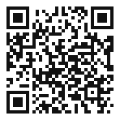

06
AI 신호등 판단 활동지
AI를 써도 되는 상황을 네 가지 신호로 나누어 판단해 봅시다.
오늘의 약속 이름, 사진, 친구 이야기 같은 개인정보는 넣지 않아요. 웹앱에는 닉네임만 씁니다. 웹앱 이름은 AI 신호등 판정단 입니다.



오늘 할 일
AI를 써도 되는 상황을 네 가지 신호로 나누어 판단해 봅시다.
1네 신호의 뜻
네 신호의 뜻을 우리 말로 바꿔 봅시다.
예시노랑은 ‘써도 되는데 조건을 지켜야 해’입니다.
2내가 놓은 카드와 이유
주황과 빨강은 어떻게 다를까요?
예시주황은 아주 조심하면 되고, 빨강은 아예 하면 안 되는 것입니다.
여기에 써요
여기에 써요
여기에 써요
여기에 써요
3우리 반과 다른 점
상황 카드 20장을 모둠에서 네 칸에 놓고, 이유를 한 줄씩 적어 봅시다.
예시‘숙제를 AI가 다 써 준다’는 빨강입니다. 제가 배우는 게 없어지니까요.
4어떤 조건이 붙으면 색이 바뀔까
‘친구와 다툰 일을 AI에게만 말한다’는 어디에 놓았나요?
예시주황입니다. 결국은 사람에게 말해야 할 것 같습니다.
5오늘의 되돌아보기
인간중심 사고를 기르는 AI적정활용 수업 WISE · 2026년 티처스랩 5기 교사연구회 A.N.D · CC BY-NC-SA